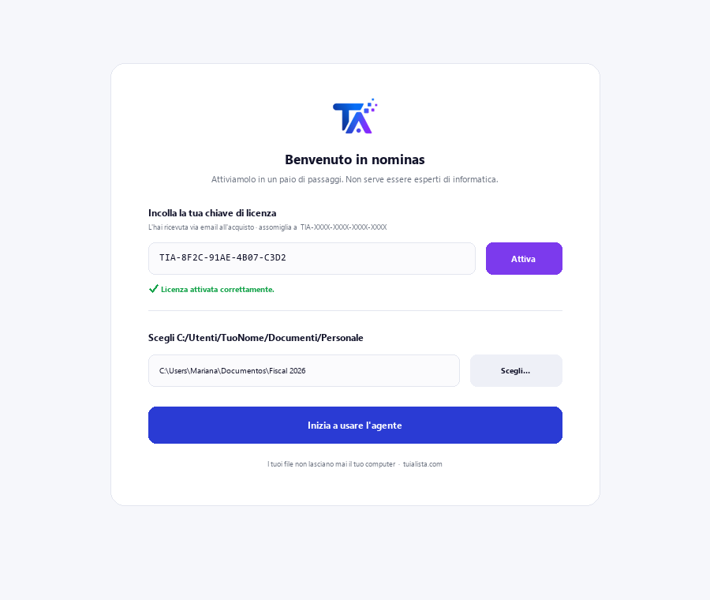
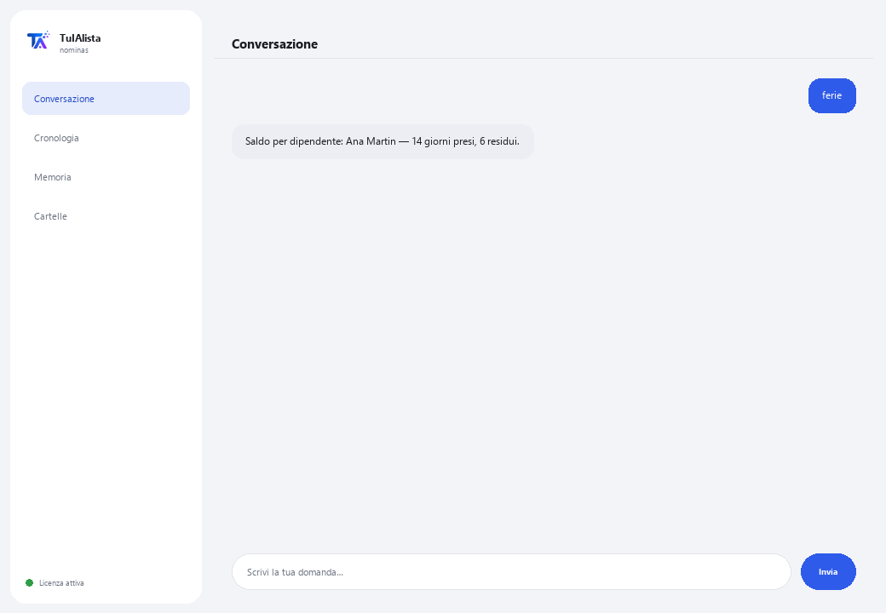

Agente Buste Paga e Risorse Umane
Organizza il tuo personale, calcola le ferie secondo la normativa del lavoro applicabile e monitora le scadenze critiche delle Risorse Umane — senza che i dati escano dal tuo dispositivo.
Cosa risolve e cosa ti serve?
I dati dei dipendenti sono estremamente sensibili e non possono girare sul cloud. Questo agente li elabora al 100% sul tuo dispositivo: carica il tuo personale, calcola il saldo ferie secondo la normativa del lavoro applicabile e ti avvisa di scadenze critiche (fine contratti, anniversari) prima che ti sfuggano.
- Ti serve: la tua chiave di licenza (TIA-XXXX-XXXX-XXXX-XXXX) e il tuo personale in Excel o CSV. Niente Python né conoscenze tecniche.
- Primo risultato in meno di 5 minuti: installi, attivi, scegli la tua cartella ed esegui ferie per vedere il saldo di ogni dipendente.
- I dati dei tuoi dipendenti non lasciano mai il tuo computer — il calcolo gira in locale.
soporte@tuialista.com o visita tuialista.com/soporte — di solito rispondiamo lo stesso giorno lavorativo.1 Cosa fa questo agente
Gli indichi la cartella con il tuo personale (in Excel o CSV) e lui:
- Carica i dati dei dipendenti rilevando automaticamente le colonne (nome, ruolo, stipendio, data di assunzione, tipo di contratto...), anche con nomi diversi.
- Calcola il saldo ferie secondo la normativa del lavoro applicabile (riforma “ferie dignitose” 2023).
- Ti avvisa delle scadenze critiche: fine contratti e anniversari lavorativi imminenti.
- Genera un riepilogo buste paga (totale, media, per reparto e tipo di contratto).
- Elenca gli anniversari imminenti per riconoscimenti.
- Avvisa dei contratti in scadenza.
- Genera un report del personale (assunzioni, cessazioni, organico per area).
- Risponde a domande di Risorse Umane con contesto anonimizzato.
Risultato: un'area Risorse Umane organizzata, con le scadenze sotto controllo e i dati sempre in casa.
2 Installazione (2 minuti)
Per Windows. Non serve internet permanente né caricare nulla sul cloud.
Scarica l'installer da tuialista.com/descargar (agente Buste Paga) e aprilo. Crea un collegamento sul desktop con il logo — non richiede Python né terminale.
Doppio clic sulla nuova icona. Incolla la tua chiave di licenza (ricevuta via email all'acquisto) e premi Attiva. Vedrai un segno di spunta verde quando è valida.
Seleziona la cartella con il tuo personale e premi Inizia a usare l'agente. La prossima volta si avvia direttamente — ricorda la tua chiave e la tua cartella.

3 Come usarlo
L'agente apre una finestra di chat, come un'app di messaggistica — non è uno schermo nero da programmatore. Scrivi il tuo comando o la tua domanda nella casella di testo in basso, premi Invia (o Invio), e la risposta appare come un messaggio, proprio come in questa immagine reale:

I comandi seguenti sono le parole che puoi scrivere nella stessa casella di testo:
> feriePer dipendente: la sua anzianità, i giorni di ferie che gli spettano (tabella normativa con la riforma 2023), quelli presi e quelli residui.
> date [giorni]Eventi delle Risorse Umane dei prossimi N giorni (30 di default): fine contratti e anniversari lavorativi, ordinati per urgenza. Es.: date 45.
> buste_pagaTotale delle buste paga, stipendio medio, massimo e minimo, e suddivisione per reparto e tipo di contratto — senza esporre inutilmente dati individuali sensibili.
> anniversari [giorni]Dipendenti che festeggiano un anniversario lavorativo nei prossimi N giorni (60 di default).
> contratti [giorni]Contratti temporanei in scadenza nei prossimi N giorni (45 di default), inclusi quelli appena scaduti.
> personaleTotale del personale, attivi, cessazioni, assunzioni dell'anno, e suddivisione per reparto e tipo di contratto.
> domanda libera?Scrivi qualsiasi domanda in linguaggio naturale, es.: quanti dipendenti raggiungono 5 anni di anzianità questo trimestre?
> esciTermina la sessione (funziona anche exit).
Vuoi vedere le 20 ricette complete con un esempio reale per ciascuna? Consulta il Catalogo delle ricette — un documento separato data la sua lunghezza: catalogo_recetas.pdf insieme a questo manuale, o la versione interattiva su tuialista.com/guia/nominas/recetas.
4 Esempi di uso comune
Revisione mensile Risorse Umane
date 30 → contratti 45
Preparare le ferie dell'anno
ferie
Report per la direzione
buste_paga → personale
Una richiesta puntuale
chi festeggia un anniversario il prossimo mese?
5 Domande frequenti
I dati dei miei dipendenti vengono caricati su internet?
Quali formati accetta?
Devo nominare le colonne in modo esatto?
Come calcola le ferie?
Il calcolo delle ferie è legalmente vincolante?
Espone gli stipendi individuali?
In quale lingua risponde?
Modifica il mio file dipendenti?
Ho aggiornato il personale, lo rileva?
Posso avere più file?
6 Risoluzione dei problemi
Non carica i dipendenti / mostra “0 dipendenti”
Rileva male una colonna
I calcoli delle ferie non corrispondono a quanto atteso
Mostra “Licenza non valida” o chiede di riconnettersi
“Nessun fornitore IA configurato”
Nessuna di queste soluzioni ha risolto il tuo problema? Scrivici direttamente — saremo felici di rivederlo con te.
soporte@tuialista.com o visita tuialista.com/soporte — di solito rispondiamo lo stesso giorno lavorativo.7 Privacy e riservatezza
I dati dei tuoi dipendenti non lasciano mai il tuo computer.
- L'agente carica ed elabora il personale in locale, sul tuo stesso dispositivo. Non carica dati dei dipendenti su nessun server.
- Il calcolo delle ferie, i report delle buste paga, le scadenze critiche e l'organico vengono calcolati sul tuo dispositivo.
- L'unica cosa che viaggia su internet è: (1) una verifica che la tua licenza sia attiva — che non include dati dei dipendenti —, e (2) quando fai una domanda libera, viene inviato un contesto anonimizzato (riepiloghi aggregati, senza esporre stipendi individuali di default) al motore IA per redigere la risposta.